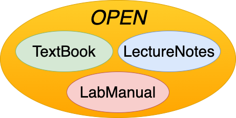

Welcome to the Open Education Project
>This site is so educators or anyone who wants to share their knowledge can
author their own textbooks, and have them hosted online to share.
This project is open source and a product of a collaboration between Red Hat Research and Boston University.